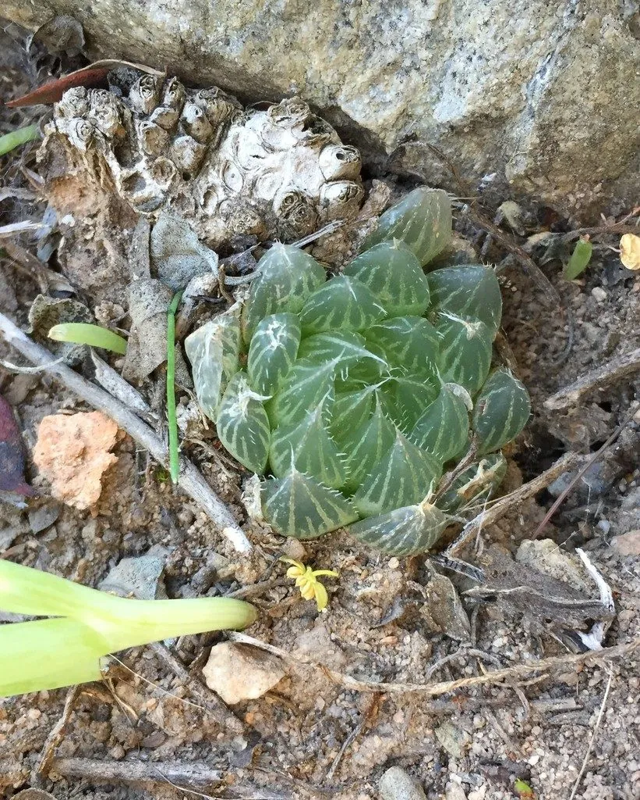

多肉植物 · 植物界
玉露 Haworthia cooperi

阿福花科小型多肉，莲座状叶尖呈半透明“窗”，晶莹如玉，喜半阴散射光，是窗面系多肉的代表，原产南非东开普省。
- 分类
- 门被子植物门纲木兰纲目天门冬目科阿福花科属瓦苇属
- 栖息环境
- 南非东开普省的岩石缝隙与草荫处，喜半阴、通风
- 地理分布
- 原产南非东开普省，世界各地广泛盆栽
- 保护级别
- 暂无评估
物种志
玉露为阿福花科瓦苇属小型多肉植物，株高 5–8 厘米，叶片肥厚多汁，螺旋状紧密排列成莲座状，叶长 2–3 厘米，先端钝圆，顶端有半透明的“窗”，呈淡绿或灰绿色，在光照下晶莹剔透。花葶细长，花小，白色带绿色条纹，花期 4–5 月。
玉露原产南非东开普省，生于岩石缝隙和草丛的阴凉处，喜半阴、通风和空气湿度较高的环境，忌强光直射和高温闷湿。它叶端的透明窗能让光线进入叶肉，帮助分布在深层的叶绿体进行光合作用，因此比一般多肉更耐阴。栽培时以颗粒土为主，可在盆面铺一层石英砂；根系为肉质萝卜根，浇水宜见干见湿，夏季高温时需控水并保持良好通风。
形态与习性
- 株高5–8 厘米，莲座直径 6–10 厘米
- 花期4–5 月，花葶细长，花小白色
- 果期花后结蒴果
- 光照喜半阴散射光，忌强光直射
- 水分见干见湿，夏季高温适当控水
- 土壤颗粒为主、排水良好的矿质土
- 繁殖分株、叶插或播种
趣味知识
- 玉露叶端的透明“窗”能让光线进入叶肉，帮助深层叶绿体进行光合作用。
- 正因有透明窗，玉露比多数多肉更耐阴，烈日反而会把叶片晒红晒伤。
- 玉露的根是肉质萝卜根，耐旱但怕积水，盆土需疏松透气。
- 叶片晶莹的品种常被称为“冰灯玉露”，是窗面系多肉的明星。